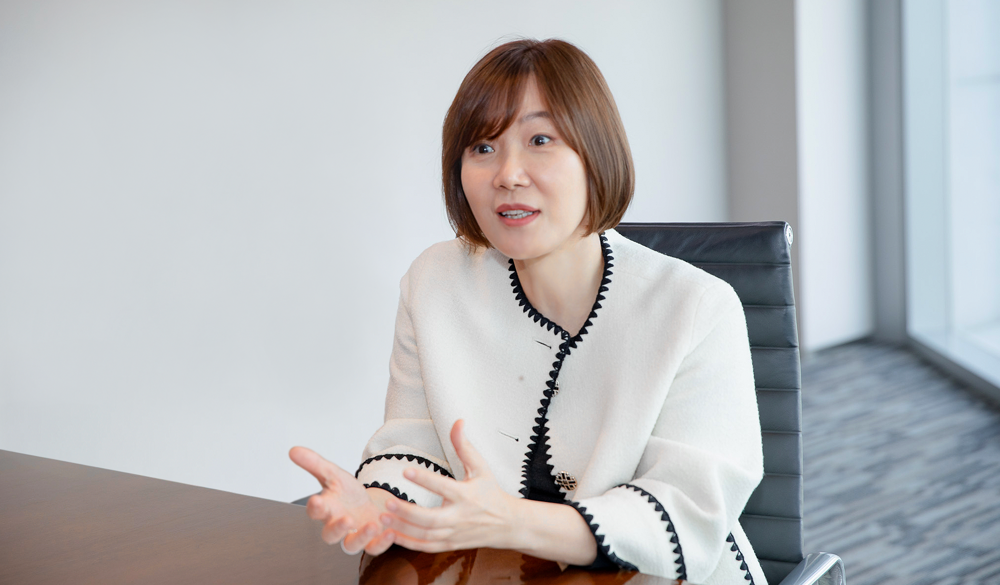

CEO Interview
국내 최초 생명보험·손해보험 통합 지원 회사
모든 고객이 언제 어디서든 통합 솔루션을 받을 수 있는
‘통합 솔루션 프로바이더’가 되겠습니다.

라이나생명은 업계 최초로 다이렉트 마케팅을 도입하고 무심사 보험과 치아 전문보험을 출시하는 등 계속해서 혁신하며 담대한 도전을 이어온 회사입니다.
이제는 라이나생명과 처브손해보험이 최고의 역량을 모아 새로운 도전을 시작합니다.
보험의 경계를 넘어, 현재와 미래의 위험에서 고객의 생명과 일상을 지키는 혁신적인 보험 서비스를 선사할 국내 최초 생명보험·손해보험 통합 지원 회사 라이나원.
라이나원의 시작에 누구보다 높은 자신감과 포부를 가진 이지현 대표이사를 만났습니다.
CEO Interview
- 
-
라이나원은 어떤 회사인가요?
라이나원은 국내외 모든 고객과 소통하는 접점으로서, 진심을 다해 고객이 더욱 편리한 서비스 경험을 누릴 수 있도록 하고자 합니다. 고객이 자세한 상담을 요청하신다면 담당 텔레마케팅 설계사(TMR)가 시간에 구애 없이 고객과 소통하며 최선을 다해 응대할 것입니다. 나아가 고객에게 편리한 서비스 경험을 선사하기 위하여 통화품질 모니터링을 시행하는 등 영업 서비스 품질을 강화하고 민원처리 절차를 꾸준히 개선하겠습니다.
라이나원은 ‘5년 연속 고객 민원 최저 기록, 서비스와 품질, 보험 프로세스를 강화하며 고객 중심 경영, 고객 보호’를 최우선으로 한 라이나생명의 진정성 있는 기치를 그대로 이어받았습니다. 이를 바탕으로 항상 고객을 중심으로 생각하고 고객 가치를 계속해서 높일 수 있는 회사로서 성장해 나아갈 것입니다.라이나원의 전략은 무엇인가요?
라이나원은 라이나생명, 처브손해보험과 함께 기존의 패러다임에 갇히지 않는 새로운 발상으로 최적의 고객만족과 경험을 선도하는 회사가 될 것입니다.
고객을 누구보다 깊게 이해하고, 고객에게 꼭 필요한 맞춤형 상품과 서비스를 편리하게 제안하며, 생명보험과 손해보험이 통합된 새로운 상품을 제공하는 라이나원의 새로운 접근 방식은 고객이 주저 없이 라이나원을 선택할 수 있는 이유가 될 것입니다.
또한 그룹 간 질적으로 향상된 서비스를 제공할 수 있는 시스템 인프라와 ASP 서비스 영역을 확고히 구축하여 사업의 성장을 도모합니다. 이를 통해 텔레마케팅(TM) 명가의 자리를 더욱 확고히 다지며 Chubb Korea의 질적 그리고 양적 성장 또한 앞장서 이끌어 갈 것입니다
라이나원의 비즈니스 방향성은 무엇인가요?
현재 언론에서는 라이나원은 ‘생손보 통합 지원사’라고 커뮤니케이션이 되고 있습니다. 이는 현재 보험 서비스를 제공하기 위해 법적인 규제 안에서 제공 가능한 부분을 고려하고 있으며, 당장은 Cross- Selling에 집중할 것 입니다. 라이나생명과 처브손해보험의 상품을 판매하고, 서비스도 디지털을 중심으로 더욱 편리한 경험을 제공하려 합니다. 또한, 장기적으로는 규제 샌드박스를 적극적으로 활용하여 새로운 상품을 만들 것입니다. 그리고 그 상품을 실질적으로 운영하는 역할을 라이나원이 할 것입니다.
라이나원의 차별성은 무엇인가요?
라이나원의 차별성은 바로 ‘혁신’이라고 생각합니다. 고객에게는 더 좋은 서비스를 제공하고, 임직원들에게도
더 나은 환경에서 일할 수 있게 하는 것입니다. 그래서 누구나 오고 싶어 하는 회사를 만들어 가려고 합니다.
라이나원은 지금, 보험의 가능성을 높이는 선도자로서 첫 발을 내딛고, 기존에는 없던 가능성을 키우는 일이 쉽지는 않지만 최고의 전문가가 모여있는 Winning Team이기에 앞으로 한 발 한 발 나아갈수록 지금과는 다른 고객 경험과 토탈 솔루션을 제공하게 될 것이며, 이는 전례에 없던 혁신을 이끌어 나아가는 회사로 자리 잡게 될 것입니다.
라이나원의 조직은 어떠한가요?
라이나원이 설정한 방향을 향해 나아가려면 결국 구성원들의 역량이 뒷받침되어야 합니다. 그러므로 사람에 대한 지속적인 투자가 이루어져야 한다고 생각합니다. 그렇기 때문에 구성원들이 어느 회사에서 일한 다기보다는 ‘내가 무슨 일을 하고, 어떠한 경험을 가질 것인지’에 집중하면서 각자의 커리어를 성장시킬 수 있는 조직이 되기를 기대합니다. 이러한 조직을 위해 전략과 세일즈만 강요하기보다는 앞으로 회사가 나아가고자 하는 방향이 무엇인지를 공감하고 커뮤니케이션을 하며 구성원들에 대한 투자를 아끼지 않을 것입니다.
Directivity
생명보험과 손해보험를 넘어 행복을 케어하는 장인 정신으로
새로운 보험 문화를 선사하겠습니다.
라이나원은 관습적인 보험의 영역을 넘어 라이나원을 만나면 모두가 행복을 누릴 수 있기를 바랍니다. 이를 위해 ‘누구에게나 가성비 좋고, 언제나 합리적인 선택’이 되는 보험, 고객이 망설임 없이 안심하고 라이나원을 계속해서 선택할 수 있는 회사가 되도록 항상 노력하겠습니다.
라이나원은 계속해서 새로운 서비스로 담대한 도전을 이끌어 나아갈 것입니다.